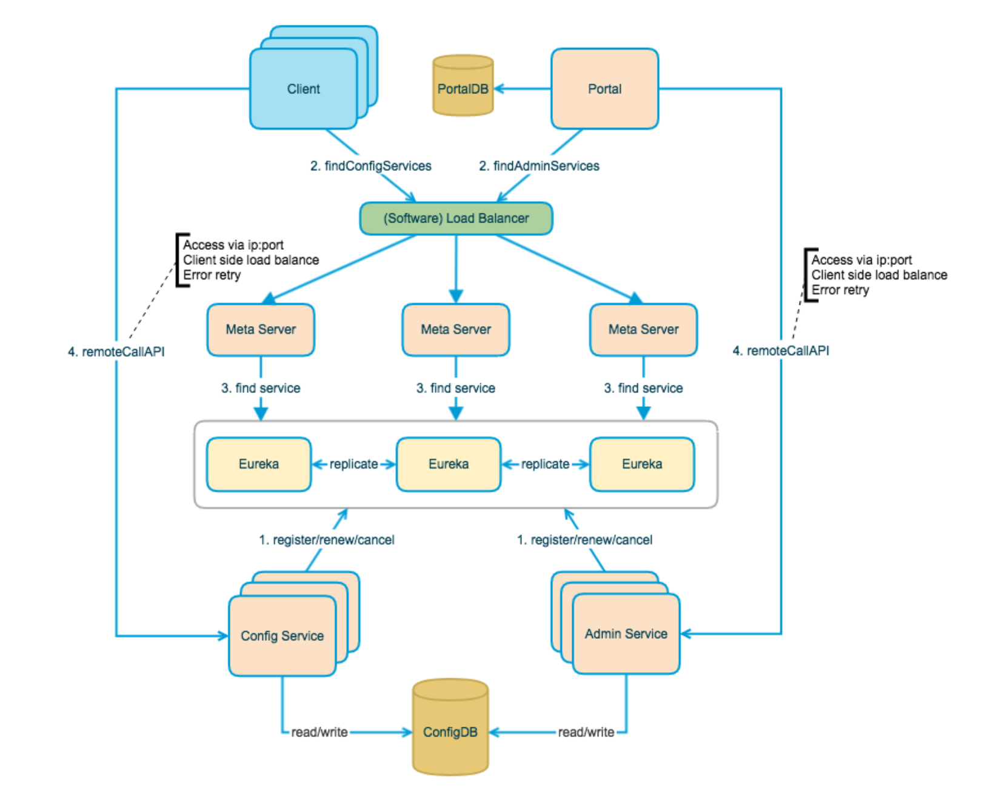

1、介绍
- Apollo（阿波罗）是携程框架部门研发的分布式配置中心，能够集中化管理应用不同环境、不同集群的配置，配置修改后能够实时推送到应用端，并且具备规范的权限、流程治理等特性，适用于微服务配置管理场景
- 本文仅仅介绍其基础架构及数据推送/拉取的核心代码，详细需看其官方文档：https://ctripcorp.github.io/apollo/#/zh/README
2、架构

3、各模块介绍
1、Client
- Apollo提供的客户端程序，为应用提供配置获取、实时更新等功能
- 通过Meta Server获取Config Service服务列表（IP+Port），通过IP+Port访问服务
- 在Client侧做load balance、错误重试
1.1、定时拉取Meta Server配置
- 初始化配置
com.ctrip.framework.apollo.internals.ConfigServiceLocator#initConfigServices
/**
* ConfigServiceLocator为单例模式，故其只初始化一次
* com.ctrip.framework.apollo.internals.DefaultInjector#DefaultInjector
*/
private void initConfigServices() {
// get from run time configurations
List<ServiceDTO> customizedConfigServices = getCustomizedConfigService();
if (customizedConfigServices != null) {
setConfigServices(customizedConfigServices);
return;
}
// update from meta service
this.tryUpdateConfigServices();
//开启周期任务定时刷新Meta Server配置，该配置包括config Service 集群机器的ip:port等信息
this.schedulePeriodicRefresh();
}- tryUpdateConfigServices
private boolean tryUpdateConfigServices() {
try {
updateConfigServices();
return true;
} catch (Throwable ex) {
//ignore
}
return false;
}
/**
* 注意 synchronized
*/
private synchronized void updateConfigServices() {
/**
* url: {cofig Service集群path}/services/config
*/
String url = assembleMetaServiceUrl();
/**
* 此处超时时间均为-1
* m_connectTimeout = -1;
* m_readTimeout = -1;
*/
HttpRequest request = new HttpRequest(url);
//重试次数
int maxRetries = 2;
Throwable exception = null;
for (int i = 0; i < maxRetries; i++) {
try {
HttpResponse<List<ServiceDTO>> response = m_httpUtil.doGet(request, m_responseType);
transaction.setStatus(Transaction.SUCCESS);
List<ServiceDTO> services = response.getBody();
if (services == null || services.isEmpty()) {
logConfigService("Empty response!");
continue;
}
setConfigServices(services);
return;
} catch (Throwable ex) {
exception = ex;
}
try {
//睡1秒
TimeUnit.SECONDS.sleep(1);
} catch (InterruptedException ex) {
//ignore
}
}
throw new ApolloConfigException(
String.format("Get config services failed from %s", url), exception);
}- schedulePeriodicRefresh
com.ctrip.framework.apollo.internals.ConfigServiceLocator#schedulePeriodicRefresh
private void schedulePeriodicRefresh() {
this.m_executorService.scheduleAtFixedRate(
new Runnable() {
@Override
public void run() {
//定时更新meta配置
tryUpdateConfigServices();
}
}, 5,5,TimeUnit.MINUTES);
}
private boolean tryUpdateConfigServices() {
try {
updateConfigServices();
return true;
} catch (Throwable ex) {
//ignore
}
return false;
}
private synchronized void updateConfigServices() {
/**
* url: {cofig Service集群path}/services/config
*/
String url = assembleMetaServiceUrl();
HttpRequest request = new HttpRequest(url);
int maxRetries = 2;
Throwable exception = null;
for (int i = 0; i < maxRetries; i++) {
try {
HttpResponse<List<ServiceDTO>> response = m_httpUtil.doGet(request, m_responseType);
List<ServiceDTO> services = response.getBody();
if (services == null || services.isEmpty()) {
logConfigService("Empty response!");
continue;
}
setConfigServices(services);
return;
} catch (Throwable ex) {
exception = ex;
}
try {
//睡1秒
TimeUnit.SECONDS.sleep(1);
} catch (InterruptedException ex) {
//ignore
}
}
throw new ApolloConfigException(
String.format("Get config services failed from %s", url), exception);
}1.2、开启长链接及定时周期刷新
- 首次根据namespac构建本地缓存会开启新的监听及任务
com.ctrip.framework.apollo.spi.DefaultConfigFactory#createLocalConfigRepository
LocalFileConfigRepository createLocalConfigRepository(String namespace) {
if (m_configUtil.isInLocalMode()) {
return new LocalFileConfigRepository(namespace);
}
return new LocalFileConfigRepository(namespace, createRemoteConfigRepository(namespace)); //此处回创建本地缓存文件
}
RemoteConfigRepository createRemoteConfigRepository(String namespace) {
//此处回根据namespace 开启新的监听及任务
return new RemoteConfigRepository(namespace);
}- RemoteConfigRepository初始化，并启动定时刷新和长连接线程
com.ctrip.framework.apollo.internals.RemoteConfigRepository#RemoteConfigRepository
/**
*每一次本地缓存初始化，都会根据namespace新建监听
*/
public RemoteConfigRepository(String namespace) {
m_namespace = namespace;
m_configCache = new AtomicReference<>();
m_configUtil = ApolloInjector.getInstance(ConfigUtil.class);
m_httpUtil = ApolloInjector.getInstance(HttpUtil.class);
m_serviceLocator = ApolloInjector.getInstance(ConfigServiceLocator.class);
remoteConfigLongPollService = ApolloInjector.getInstance(RemoteConfigLongPollService.class);
m_longPollServiceDto = new AtomicReference<>();
m_remoteMessages = new AtomicReference<>();
m_loadConfigRateLimiter = RateLimiter.create(m_configUtil.getLoadConfigQPS());
m_configNeedForceRefresh = new AtomicBoolean(true);
m_loadConfigFailSchedulePolicy = new ExponentialSchedulePolicy(m_configUtil.getOnErrorRetryInterval(),
m_configUtil.getOnErrorRetryInterval() * 8);
gson = new Gson();
this.trySync(); //同步
this.schedulePeriodicRefresh(); //开启定时刷新
this.scheduleLongPollingRefresh(); //开启LongPolling刷新
}- schedulePeriodicRefresh启动周期任务（间隔5min/次）
com.ctrip.framework.apollo.internals.RemoteConfigRepository#schedulePeriodicRefresh
private void schedulePeriodicRefresh() {
m_configUtil.getRefreshInterval(), m_configUtil.getRefreshIntervalTimeUnit());
m_executorService.scheduleAtFixedRate(
new Runnable() {
@Override
public void run() {
//每5分钟同步配置一次该方法回调用RemoteConfigRepository.sync()方法
trySync();
}
}, 5, 5,TimeUnit.MINUTES);
}com.ctrip.framework.apollo.internals.RemoteConfigRepository#sync
protected synchronized void sync() {
ApolloConfig previous = m_configCache.get();
//http 请求同步配置
ApolloConfig current = loadApolloConfig();
//reference equals means HTTP 304
if (previous != current) {
m_configCache.set(current);
this.fireRepositoryChange(m_namespace, this.getConfig());
}
}com.ctrip.framework.apollo.internals.RemoteConfigRepository#loadApolloConfig
private ApolloConfig loadApolloConfig() {
if (!m_loadConfigRateLimiter.tryAcquire(5, TimeUnit.SECONDS)) {
//wait at most 5 seconds
try {
TimeUnit.SECONDS.sleep(5);
} catch (InterruptedException e) {
}
}
String appId = m_configUtil.getAppId();
String cluster = m_configUtil.getCluster();
String dataCenter = m_configUtil.getDataCenter();
int maxRetries = m_configNeedForceRefresh.get() ? 2 : 1;
long onErrorSleepTime = 0; // 0 means no sleep
Throwable exception = null;
List<ServiceDTO> configServices = getConfigServices();
String url = null;
for (int i = 0; i < maxRetries; i++) {
List<ServiceDTO> randomConfigServices = Lists.newLinkedList(configServices);
Collections.shuffle(randomConfigServices);
//Access the server which notifies the client first
if (m_longPollServiceDto.get() != null) {
randomConfigServices.add(0, m_longPollServiceDto.getAndSet(null));
}
for (ServiceDTO configService : randomConfigServices) {
if (onErrorSleepTime > 0) {
try {
m_configUtil.getOnErrorRetryIntervalTimeUnit().sleep(onErrorSleepTime);
} catch (InterruptedException e) {
//ignore
}
}
/**
* url:configs/%s/%s/%s
*/
url = assembleQueryConfigUrl(configService.getHomepageUrl(), appId, cluster, m_namespace,
dataCenter, m_remoteMessages.get(), m_configCache.get());
/**
* 此处超时时间均为-1
* m_connectTimeout = -1;
* m_readTimeout = -1;
*/
HttpRequest request = new HttpRequest(url);
try {
HttpResponse<ApolloConfig> response = m_httpUtil.doGet(request, ApolloConfig.class);
m_configNeedForceRefresh.set(false);
m_loadConfigFailSchedulePolicy.success();
if (response.getStatusCode() == 304) {
logger.debug("Config server responds with 304 HTTP status code.");
return m_configCache.get();
}
ApolloConfig result = response.getBody();
return result;
} catch (ApolloConfigStatusCodeException ex) {
ApolloConfigStatusCodeException statusCodeException = ex;
//config not found
if (ex.getStatusCode() == 404) {
String message = String.format(
"Could not find config for namespace - appId: %s, cluster: %s, namespace: %s, " +
"please check whether the configs are released in Apollo!",
appId, cluster, m_namespace);
statusCodeException = new ApolloConfigStatusCodeException(ex.getStatusCode(),
message);
}
exception = statusCodeException;
} catch (Throwable ex) {
exception = ex;
} finally {
transaction.complete();
}
// if force refresh, do normal sleep, if normal config load, do exponential sleep
onErrorSleepTime = m_configNeedForceRefresh.get() ? m_configUtil.getOnErrorRetryInterval() :
m_loadConfigFailSchedulePolicy.fail();
}
}
String message = String.format(
"Load Apollo Config failed - appId: %s, cluster: %s, namespace: %s, url: %s",
appId, cluster, m_namespace, url);
throw new ApolloConfigException(message, exception);
}- 开启scheduleLongPollingRefresh长连接，监听数据更新推送
com.ctrip.framework.apollo.internals.RemoteConfigRepository#scheduleLongPollingRefresh
/**
* 开启长连接，监听数据更新推送，其中remoteConfigLongPollService 是单例模式，故其参数初始化只有一次
*/
private void scheduleLongPollingRefresh() {
remoteConfigLongPollService.submit(m_namespace, this);
}com.ctrip.framework.apollo.internals.RemoteConfigLongPollService#submit
public boolean submit(String namespace, RemoteConfigRepository remoteConfigRepository) {
boolean added = m_longPollNamespaces.put(namespace, remoteConfigRepository);
m_notifications.putIfAbsent(namespace, INIT_NOTIFICATION_ID);
/*
* 不区分namespace 一个服务器只开启一次长连接
*/
if (!m_longPollStarted.get()) {
startLongPolling();
}
return added;
}
private void startLongPolling() {
if (!m_longPollStarted.compareAndSet(false, true)) {
//already started
return;
}
try {
final String appId = m_configUtil.getAppId();
final String cluster = m_configUtil.getCluster();
final String dataCenter = m_configUtil.getDataCenter();
//默认延长2000ms
final long longPollingInitialDelayInMills = 2000;
m_longPollingService.submit(new Runnable() {
@Override
public void run() {
if (longPollingInitialDelayInMills > 0) {
try {
TimeUnit.MILLISECONDS.sleep(longPollingInitialDelayInMills);
} catch (InterruptedException e) {
//ignore
}
}
//开启长连接监听
doLongPollingRefresh(appId, cluster, dataCenter);
}
});
} catch (Throwable ex) {
m_longPollStarted.set(false);
ApolloConfigException exception =
new ApolloConfigException("Schedule long polling refresh failed", ex);
}
}
private void doLongPollingRefresh(String appId, String cluster, String dataCenter) {
final Random random = new Random();
ServiceDTO lastServiceDto = null;
while (!m_longPollingStopped.get() && !Thread.currentThread().isInterrupted()) {
if (!m_longPollRateLimiter.tryAcquire(5, TimeUnit.SECONDS)) {
//wait at most 5 seconds
try {
TimeUnit.SECONDS.sleep(5);
} catch (InterruptedException e) {
}
}
String url = null;
try {
if (lastServiceDto == null) {
List<ServiceDTO> configServices = getConfigServices();
//随机
lastServiceDto = configServices.get(random.nextInt(configServices.size()));
}
/**
* url: {cofig Service集群path}/notifications/v2
*/
url =
assembleLongPollRefreshUrl(lastServiceDto.getHomepageUrl(), appId, cluster, dataCenter,
m_notifications);
HttpRequest request = new HttpRequest(url);
//默认请求超时时间90s，长连接保持时间60s
request.setReadTimeout(90 * 1000);
final HttpResponse<List<ApolloConfigNotification>> response =
m_httpUtil.doGet(request, m_responseType);
if (response.getStatusCode() == 200 && response.getBody() != null) {
updateNotifications(response.getBody());
updateRemoteNotifications(response.getBody());
notify(lastServiceDto, response.getBody());
}
//try to load balance
if (response.getStatusCode() == 304 && random.nextBoolean()) {
lastServiceDto = null;
}
m_longPollFailSchedulePolicyInSecond.success();
} catch (Throwable ex) {
lastServiceDto = null;
long sleepTimeInSecond = m_longPollFailSchedulePolicyInSecond.fail();
try {
TimeUnit.SECONDS.sleep(sleepTimeInSecond);
} catch (InterruptedException ie) {
//ignore
}
}
}
}2、Config Service
- 提供配置获取接口
- 提供配置更新推送接口（基于Http long polling）
- 服务端使用[Spring DeferredResult]实现异步化，从而大大增加长连接数量
- 目前使用的tomcat embed默认配置是最多10000个连接（可以调整），使用了4C8G的虚拟机实测可以支撑10000个连接，所以满足需求（一个应用实例只会发起一个长连接）。
- 接口服务对象为Apollo客户端
3、Admin Service
提供配置管理接口
提供配置修改、发布等接口
接口服务对象为Portal
4、Meta Server
Portal通过域名访问Meta Server获取Admin Service服务列表（IP+Port）
Client通过域名访问Meta Server获取Config Service服务列表（IP+Port）
Meta Server从Eureka获取Config Service和Admin Service的服务信息，相当于是一个Eureka Client
增设一个Meta Server的角色主要是为了封装服务发现的细节，对Portal和Client而言，永远通过一个Http接口获取Admin Service和Config Service的服务信息，而不需要关心背后实际的服务注册和发现组件
Meta Server只是一个逻辑角色，在部署时和Config Service是在一个JVM进程中的，所以IP、端口和Config Service一致
5、Eureka
基于Eureka和Spring Cloud Netflix提供服务注册和发现
Config Service和Admin Service会向Eureka注册服务，并保持心跳
为了简单起见，目前Eureka在部署时和Config Service是在一个JVM进程中的（通过Spring Cloud Netflix）
6、Portal
- 提供Web界面供用户管理配置
- 通过Meta Server获取Admin Service服务列表（IP+Port），通过IP+Port访问服务
- 在Portal侧做load balance、错误重试
4、服务端实时推送设计
3.1、ReleaseMessage的实现方式
- 客户端会发起一个Http请求到Config Service的
notifications/v2接口 - NotificationControllerV2不会立即返回结果，而是通过Spring DeferredResult把请求挂起
- 如果在60秒内没有该客户端关心的配置发布，那么会返回Http状态码304给客户端
- 如果有该客户端关心的配置发布，NotificationControllerV2会调用DeferredResult的setResult方法，传入有配置变化的namespace信息，同时该请求会立即返回。客户端从返回的结果中获取到配置变化的namespace后，会立即请求Config Service获取该namespace的最新配置。